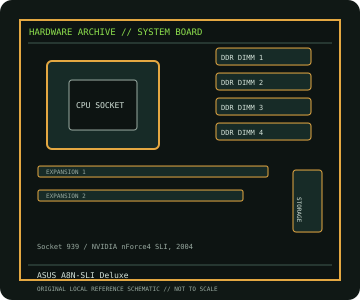

[ INDIVIDUAL COMPONENT // MOTHERBOARDS ]
ASUS A8N-SLI Deluxe
A8N-SLI Deluxe: Socket 939 / NVIDIA nForce4 SLI, 2004; revision-aware Socket motherboard specifications, CPU/BIOS qualification, board size, memory, expansion, storage and I/O.

IDENTIFICATION: ASUS model designation; match PCB identification and BIOS to the board in hand. Confirm the exact silkscreen, revision and firmware on the physical board; near-name variants can use different BIOS files and connectors.
Specifications
| Catalog subcategory | AMD Socket platforms |
|---|---|
| Exact board / model | A8N-SLI Deluxe — ASUS model designation; match PCB identification and BIOS to the board in hand |
| Platform and chipset | Socket 939 / NVIDIA nForce4 SLI, 2004; NVIDIA nForce4 SLI chipset. |
| CPU and BIOS support | Socket 939; supports Athlon 64, Athlon 64 FX and Athlon 64 X2 families subject to ASUS CPU-list and BIOS requirements. |
| Memory | Four DDR DIMM sockets, dual-channel, up to 4 GB DDR400/333/266 (unbuffered, non-ECC; CPU-dependent limits apply). |
| Board size / form factor | ATX, 305 × 244 mm. |
| Expansion and storage | Two PCI Express x16-length graphics slots configured for SLI, two PCIe x1 and three PCI slots; eight SATA 3 Gb/s ports (four nForce4 and four Silicon Image) plus one PATA channel. |
| Rear I/O and compatibility | Dual Gigabit Ethernet, USB 2.0, 8-channel audio, PS/2, optical/coaxial digital audio and legacy serial/parallel headers; no integrated graphics output. Use a Socket 939 CPU and compatible PCIe graphics. SLI operation, PCIe lane allocation and SATA/RAID setup are board-specific; check ASUS CPU support and minimum BIOS before CPU installation. |
Compatibility and revision notes
Use a Socket 939 CPU and compatible PCIe graphics. SLI operation, PCIe lane allocation and SATA/RAID setup are board-specific; check ASUS CPU support and minimum BIOS before CPU installation.
Before installation, compare the physical board and revision against the manufacturer manual. Check socket condition, CPU power requirements, cooler/chassis clearance, DIMM population order, power connectors and any shared PCIe or SATA lanes. Update firmware only with the exact model’s supported procedure.
Preservation and repair
Record the PCB revision, BIOS identifier, serial/date code, installed CPU and memory, accessories, known faults, repairs and test conditions. Use ESD-safe handling and inspect for socket damage, corrosion, leaking capacitors and loose conductive hardware before power-up.
Sources & further reading
- ASUS A8N-SLI Deluxe support and manualsManufacturer resources for the exact Deluxe board, including manuals and firmware.
- ASUS A8N-SLI Deluxe CPU supportManufacturer CPU compatibility table; confirm CPU stepping and BIOS requirement.
Manufacturer documentation is authoritative for supported CPUs, minimum BIOS, memory qualification and revision-specific wiring. Do not transfer compatibility claims or firmware between similar model names.